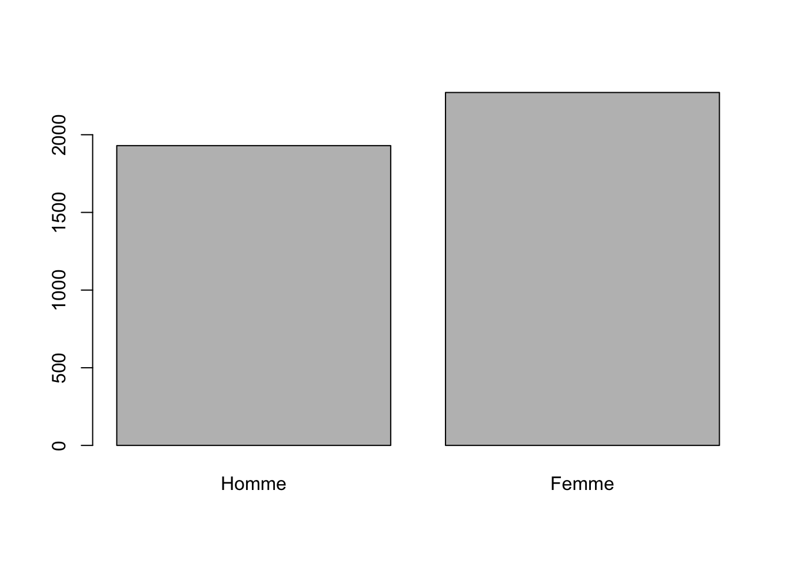

Chapitre 2 Introduction générale à R
Le logiciel R est gratuit et très puissant. Il est littéralement possible de faire toutes les analyses statistiques imaginables avec R, et cela est notamment dû au fait qu’il y a une très large communauté d’utilisateurs de R qui produisent des «packages» qui ajoutent des fonctions au logiciel. Le désavantage de R est que la courbe d’apprentissage est plus difficile qu’avec d’autres logiciels parce que R n’offre pas de menus déroulants. Cependant après avoir installé R sur votre ordinateur, il est possible d’installer R Studio qui est aussi gratuit.R Studio n’est pas un logiciel qui fonctionne seul, il nécessite que la base de R soit installée sur votre ordinateur. R Studio est une interface qui va «par-dessus» R et facilite un peu son utilisation. Il faut donc préalablement avoir installé R, puis on installe R Studio. Une fois cela fait, on peut utiliser R Studio.
R Studio propose par défaut quatre panels qui peuvent être positionnés à votre guise dans les préférences du logiciel. Si vous ne modifiez pas les préférences, le panel où nous écrivons la syntaxe est en haut à gauche. Sous ce panel, en bas à gauche, se trouve la «console» de R, qui renvoie les résultats des commandes que nous passons à R via notre syntaxe. En haut à droite se trouve le panel «Environnement» qui liste tous les objets chargé en mémoire dans R. En bas à droite se trouve le panel des fichiers, figures, packages (et autres) où seront affichés les figures et où nous pourront charger et installer des packages.
2.1 Les packages
R vient par défaut avec une série de commandes très utiles, mais il existe aussi beaucoup de «packages» qui ajoutent des fonctions au logiciel. Les packages doivent être installés sur votre ordinateur (et souvent ré-installés lorsque vous mettez à jour votre version de R), mais ensuite vous n’avez pas à les installer de nouveau. Cependant, si vous désirez utiliser les fonctions d’un package, il faut systématiquement le charger dans votre session R. R fonctionne ainsi parce que si tous les packages installés sur votre ordinateurs étaient systématiquement actifs sans avoir à les charger, R deviendrait de plus en plus lourd et lent parce qu’il exigerait énormément de mémoire RAM. Donc, on installe d’abord un package quand on veut pouvoir utiliser ses fonctions. Cette installation ne se fait qu’une seule fois (ou lors des mises à jour), mais ensuite on doit charger à chaque session les packages que l’on veut utiliser.
Par exemple, le package ggplot2 est très utilie pour faire des graphiques. Si je ne l’ai jamais installé sur mon ordinateur, je peux le faire en cliquant sur l’onglet «packages» du panel en bas à droite, puis «install», puis je peux taper le nom du package (“ggplot2”) dans le menu. R Studio cherchera la package correspondant dans la banque de package accessible via internet. En cliaquant sur install, R Studio installera le package. Alternativement, on peut aussi procéder directement par la syntaxe comme suit avec la commande “install.packages(”NOM DU PACKAGE”)“, donc dans notre cas install.packages(“ggplot2”).
Une fois que le package est installé, il apparaîtra dans la liste «System Library» sous l’onglet «package» du panel en bas à droite. On peut simplement cliquer sur la case correspondant au package souhaité pour l’activer, ou encore mieux le faire via la syntaxe comme ceci :
library("ggplot2")Notez que vous ne pouvez pas utiliser les fonctions d’un package s’il n’est pas chargé dans votre session. Pour cette raison, si vous écrivez un script qui utilise des fonctions qui viennent de certains packages, la bonne pratique est de charger ceux-ci dans votre syntaxe elle-même avant d’utiliser les fonctions. Autrement, vous aurez un message d’erreur et votre script ne pourra pas rouler du début à la fin. Il peut donc être pratique au début d’utiliser les menus et les cases cliquables, mais je vous suggère fortement de copier et coller les lignes de code produites par ces actions dans votre syntaxe elle-même afin que vous contruisiez progressivement un script qui pourra ensuite être roulé du début à la fin sans erreurs. Une bonne méthode de travail et des syntaxes «propres» vous sauverons beaucoup de temps.
2.2 Le «working directory»
Comme tous les logiciels statistiques, R a en mémoire un endroit sur votre ordinateur qui est le «working directory». C’est à cet endroit que R placera par défaut tout ce que vous sauvegarderez durant votre session. Par défaut, R utilisera le dernier working directory qu’il a en méoire. Vous pouvez à tout moment changer le working directory comme ceci :
#setwd("/output") # setwd() pour set working directory
# puis on place le lien vers le fichier souhaité dans la parenthèse. On peut passer «par-dessus» le working directory en mémoire à un moment donné en référant au lien complet vers un fichier que l’on souhaite utiliser (ou dans lequel on souhaite sauvegarder quelque chose), mais l’avantage d’établir le working directory approprié est que R assumera alors que ce à quoi vous référez s’y trouve. Il est alors possible d’utiliser seulement le nom du fichier auquel on réfère (plutôt que le lien complet vers celui-ci). Il est donc de bonne pratique d’établir au début d’une syntaxe le working directory que vous souhaitez utiliser. Cela vous évitera d’avoir à écrire constement les liens complets vers les fichiers sur votre ordinateur.
2.3 Quelques manipulations initiales avec R
Pour vous aider à mieux saisir ce que nous ferons durant le cours et pour que vous ayez un petit guide de référence lorsque vous serez seul à votre bureau, je vais ici procéder à quelques manipulations de bases avec R. La syntaxe (ou les commandes) apparaîtront dans des blocs ombragé et le résultat produit par R apparaîtra sous ces blocs sur des lignes précédés de deux dièzes. Les annotations à l’intérieur de la syntaxe seront précédées d’un seul dièse. Cela est nécessaire afin que R sache qu’il s’agit d’une annotation et non pas de commandes qu’il doit exécuter.
Commençons doucement en demandant à R de renvoyer le chiffre \(\pi\).
# Ceci est une autre annonation. Nous allons entrer la commande "pi"
pi # Ceci est une autre annotation que je place à côté de la commande.## [1] 3.141593La commande «pi» est la ligne de commande et R nous renvoie le résultat sous le bloc ombragé sur la ligne précédée par deux dièses. Nous pourrions aussi demander à R de nous renvoyer toutes les couleurs qu’il a en mémoire. R contient par défaut 657 couleurs dans l’objet colors() qui sont utilisées notamment pour faire les graphiques. Or, puisqu’il y en a 657, nous allons simplement lui demander de nous donner seulement les premières en utilisant la commande head(), et en insérant colors() dans la parenthèse de la commande head() :
head(colors())## [1] "white" "aliceblue" "antiquewhite" "antiquewhite1"
## [5] "antiquewhite2" "antiquewhite3"Ici, le premier élément contenu dans l’objet colors() est “white,” le cinquième élément est “antiquewhite2” et le sixième “antiquewhite3.” Si nous n’avions pas inséré colors() à l’intérieur de la commande head(), R nous aurait renvoyé la liste complète des 657 couleurs, ce qui aurait été interminable.
Nous pouvons aussi créer des objets qui peuvent contenir tout ce que l’on veut. Nous pouvons nommer ces objets de n’importe quelle manière. Créons ici l’objet «fadeldwill» qui contiendra la valeur de 1 :
fadeldwill <- 1Nous avons ici créé l’objet fadeldwill et nous lui avons assigné la valeur de 1. Le signe <- est équivalent à =, ou peut être lu comme «insère ce qui est à droite dans l’objet à gauche de la flèche». L’objet fadeldwill est maintenant en mémoire, mais R ne renvoie rien parce que nous ne lui avons pas demandé. Faisons-le.
fadeldwill## [1] 1Nous voyons que fadeldwill ne contient qu’un seul élément ([1]) qui est la valeur 1.
Nous pourrions changer le contenu de fadeldwill pour “abc” au lieu de 1. Notez que je commence ici à annoter le contenu de la syntaxe en faisant précéder toute annotation d’un dièse afin que R sache qu’il ne s’agit pas de code qu’il doit exécuter. Les annotations sont très utiles pour clarifier une syntaxe et mieux s’y retrouver plus tard. Pour ceux qui sont familiers avec Stata, c’est l’équivalent de mettre une étoile (*) dans la syntaxe.
fadeldwill <- "abc" # Pour mettre abc dans fadeldwill.
# Les guillements sont nécessaires puisque abc n'est pas numérique.
fadeldwill # Pour demander à R de nous dire ce que contient fadeldwill.## [1] "abc"Nous pourrions vouloir que fadeldwill contienne plutôt une série de chiffres (disons : 1, 2, 3, 4, 5). Il faudra alors utiliser la fonction c(), «c» pour «concatenate», et on insère ce que l’on veut dans la parenthèse, avec des virgules entres les éléments.
fadeldwill <- c(1, 2, 3, 4, 5)
fadeldwill## [1] 1 2 3 4 5Nous pourrions aussi vouloir mettre autre chose que des nombres dans fadeldwill :
fadeldwill <- c("A", "B", "C", "D", "E")
fadeldwill## [1] "A" "B" "C" "D" "E"Jusqu’à présent, nous avons systématiquement remplacé le contenu de fadeldwill par du nouveau contenu. Nous pourrions cependant vouloir lui ajouter un nouvel élément à ce qu’il contient déjà. Ajoutons la lettre F à la suite de lettres que contient fadeldwill :
fadeldwill <- c(fadeldwill, "F") # Ici, nous disons simplement que l'objet
# fadeldwill contient fadeldwill et la lettre F. Donc, ce qu'était déjà
# l'objet fadeldwill (soit "A", "B", "C", "D", "E") et on y ajoute F.
fadeldwill ## [1] "A" "B" "C" "D" "E" "F"Nous pourrions aussi vouloir retirer un élément de fadeldwill. Disons que nous voulions retirer C :
fadeldwill <- fadeldwill[-3] # Nous voulons que fadeldwill demeure identique
# mais en excluant "C", qui est la troisième valeur, d'où le [-3].
fadeldwill ## [1] "A" "B" "D" "E" "F"Nous aurions aussi pu vouloir retirer A et F :
fadeldwill <- fadeldwill[-c(1, 5)] # Nous retirons le premier (A) et le
# cinquième élément (F, devenu cinquième après le retrait de C).
# Nous devons les mettre dans un c() parce qu'il y a plus d'un élément
# à retirer
fadeldwill ## [1] "B" "D" "E"Nous pourrions aussi vouloir que R nous renvoie seulement le deuxième élément contenu dans fadeldwill :
fadeldwill[2] # Nous demandons à R de donner le 2e élément de fadeldwill## [1] "D"R nous renvoie bien la lettre D, qui est maintenant le deuxième élément dans notre objet.
Nous pourrions aussi vouloir créer l’objet fadeldwillidou qui contiendrait seulement le premier et le troisième élément de fadeldwill :
fadeldwillidou <- fadeldwill[c(1, 3)]
fadeldwillidou## [1] "B" "E"Encore une fois, si on veut ajouter quelque chose à un objet qui existe déjà, il faut que l’objet lui-même soit inclu à droite de la flèche. Par exemple, si nous voulons ajouter A à fadeldwillidou qui contient déjà B, E, il faut impérativement inclure fadeldwillidou dans la parenthèse c() à droite de la flèche.
fadeldwillidou <- c(fadeldwillidou, "A")Si l’on inclut pas l’objet lui-même à droite de la flèche, alors son contenu sera remplacé par ce qui est à droite de la flèche, sans préserver le contenu préalable. Par exemple, ici nous remplaçons complètement le contenu de fadeldwillidou (B, E, A) par les nombres de 1 à 10.
fadeldwillidou <- c(1,2,3,4,5,6,7,8,9,10)
fadeldwillidou## [1] 1 2 3 4 5 6 7 8 9 10Pour le meilleur et (surtout) pour le pire, le recodage est très certainement ce qui demande souvent le plus de travail lorsque nous faisons des analyses statistiques. Souvent, les variables ne sont pas codées comme on voudrait qu’elles le soient, ou il faut «nettoyer» les données brutes de sorte à les rendre analysables. Nous verrons cela plus en profondeur un peu plus loin, mais pour l’instant, voici quelques manipulations usuelles qu’il vous sera utile de comprendre.
Nous avons l’objet fadeldwill qui contient B, D, E. Imaginons que nous voulions remplacer E par Z. Nous pouvons le faire comme ceci.
fadeldwill## [1] "B" "D" "E"fadeldwill[fadeldwill == "E"] <- "Z"
# Remplace les valeurs de fadeldwillidou qui sont égales à "E"
# et remplace les par "Z".
fadeldwill## [1] "B" "D" "Z"Nous pourrions maintenant vouloir changer les valeurs de certains chiffres de fadeldwillidou qui contient 1, 2, 3, 4, 5, 6, 7, 8, 9, 10. Disons que nous veulons que 2 soit remplacé par 1.
fadeldwillidou[fadeldwillidou == 2] <- 1
# Remplace les valeurs de fadeldwillidou qui sont égales à 2
# et remplace les par 1.
fadeldwillidou## [1] 1 1 3 4 5 6 7 8 9 10Imaginons maintenant que nous voulions que les chiffres de 3 à 7 soient remplacés par 4.
fadeldwillidou[fadeldwillidou > 2 & fadeldwillidou <=7] <- 4
# Recode les valeurs de fadeldwillidou plus grandes que 2 et inférieure
# ou égale à 7 et remplace par 4.
fadeldwillidou## [1] 1 1 4 4 4 4 4 8 9 10Nous pourrions aussi vouloir changer la valeur de 9 pour celle de 10
fadeldwillidou[fadeldwillidou > 8] <- 10 # Recode les chiffres plus grand
# que 8 pour qu'ils prennent la valeur de 10.
fadeldwillidou## [1] 1 1 4 4 4 4 4 8 10 10# alternativement, dans ce cas nous aurions aussi pu faire
# fadeldwillidou[fadeldwillidou == 9] <- 10Dans la vraie vie, ces chiffres pourraient correspondre à des codes pour, par exemple, la couleur des yeux. 1 pourrait vouloir dire qu’une personne a les yeux bleus, 4 qu’elle a les yeux bruns, 8 qu’elle a les yeux pairs et 10 qu’elle a les yeux verts. Sachant cela, nous pourrions préférer avoir les labels plutôt que les chiffres. Cela pourrait être pratique plus tard.
fadeldwillidou <- factor(fadeldwillidou,
labels = c("Bleus", "Bruns",
"Pairs", "Verts"))
fadeldwillidou## [1] Bleus Bleus Bruns Bruns Bruns Bruns Bruns Pairs Verts Verts
## Levels: Bleus Bruns Pairs Vertssummary(fadeldwillidou)## Bleus Bruns Pairs Verts
## 2 5 1 2Les objets fadeldwill et fadeldwillidou sont en mémoire dans notre environnement de travail (workspace). Nous pouvons voir le contenu de tous les objets qui se trouvent dans cet environnement en faisant la commande objects() :
objects()## [1] "fadeldwill" "fadeldwillidou"Nous voyons que notre espace de travail ne contient pour l’instant que nos deux objets. Il y a fadeldwill et fadeldwillidou. R Studio nous permet de facilement voir tout le contenu de l’espace de travail sans passer de commande R en observant simplement le panel approprié dans l’interface.
L’espace de travail peut contenir une très grande quantité d’objets. Ceux-ci peuvent être des trivialités (comme c’est le cas ici), ou encore des choses plus importantes comme des bases de données (des matrices). Contrairement aux autres logiciels statistiques, il est donc très facile d’utiliser en même temps plusieurs bases de données avec R, ce qui est parfois très pratique et impossible (ou souvent fastidieux) avec les autres logiciels.
Ceci étant, puisque les objets fadeldwill et fadeldwillidou nous seront complètement inutiles, il vaut aussi bien les effacer :
rm(fadeldwill, fadeldwillidou) # rm() pour "remove". Nous n'avons pas besoin
# de mettre fadeldwill et fadeldwillidou à l'intérieur d'un c() parce que
# la commande rm() implique forcément une liste d'un ou plusieurs éléments
# et rien d'autre. Alternativement, nous pourrions faire rm(list = ls())
# pour vider complètement l'espace de travail.
objects() # objects() est maintenant vide.## character(0)2.4 Une syntaxe qui roule : une bonne méthode de travail
Il est possible d’écrire directement des commandes dans la console de R et dans certains cas cela peut être utile, mais il est beaucoup mieux d’écrire vos commandes dans un script qui pourra ensuite être réutilisé. Par ailleurs, un bon script doit pouvoir être roulé du début à la fin sans erreur. Des erreurs dans un script surviendront, par exemple, si à un moment donné dans la série de commandes on fait référence à un objet qui n’a pas préalablement été créé dans le script lui-même.
Imaginons que j’utilise la console pour créer l’objet x qui contiendra la lettre A. J’écrirais donc la commande suivante directement dans la console plutôt que dans un script :
x <- "A"Je viens de créer l’objet x, il existe en ce moment dans ma session, mais je ne l’ai pas fait en écrivant la commande dans un scrip. Ensuite, dans un fichier de synataxe, je modifie l’objet x pour inclure aussi “B.” J’écris donc la commande suivante dans un fichier de syntaxe:
x <- c(x, "B")Remarquez cependant que notre objet x a d’abord été créé directement dans la console et contenait la lettre A, puis nous l’avons modifié par une commande écrite dans notre script de sorte à ce qu’il inclut aussi la lettre B.
x## [1] "A" "B"Notre objet x contient donc maintenant les lettres A et B.
Imaginons maitenant que je sauvegarde mon script qui contenait seulement la commande «x <- c(x, “B”)» et que je ferme ma session R. Je vais ici simuler la fermeture de la session en vidant le contenu de l’espace de travail.
rm(list = ls())Maintenant, imagions que je retourne à mon script deux semaines plus tard et que je veuille le rouler. Mon script contiendrait alors uniquement ceci:
x <- c(x, "B")## Error in eval(expr, envir, enclos): object 'x' not foundNous avons un message d’erreur parce que notre script tente de modifier l’objet x qui n’est pas préalablement créé dans notre session. Donc, ma syntaxe ne peut pas être «roulée», elle n’est pas «propre» parce qu’elle génère un message d’erreur. Ce message est causé par le fait que mon script fait référence à un objet qui n’est pas créé dans le script lui-même au moment où on fait référence à l’objet. Plutôt que de créer l’objet x via une commande dans la console, il aurait donc mieux valu le faire dans un script complet comme ceci:
x <- "A" # Créé l'obet x qui contient A
x <- c(x, "B") # Modifie l'objet x pour lui ajouter BNotez aussi que l’odre des commandes est important. Je ne pourrais pas modifier l’objet x sans d’abord l’avoir créé dans la syntaxe. Simulons encore une fois que nous fermons notre session en vidant notre espace de travail (qui contient actuellement x).
rm(list = ls())Imaginons maintenant que ma syntaxe soit écrite en sens inverse:
x <- c(x, "B") # Modifie l'objet x pour lui ajouter B## Error in eval(expr, envir, enclos): object 'x' not foundx <- "A" # Créé l'obet x qui contient ANous avons un message d’erreur parce que la première ligne de la syntaxe tente de modifier l’objet x qui n’a pas encore été créé dans cette syntaxe. L’ordre des commandes est donc important.
Donc, ce qui est nécessaire à ce qu’un script roule bien doit être écrit dans le script lui-même. N’écrivez des commandes directement dans la console que pour des choses temporaires qui ne sont pas nécessaires à ce que votre syntaxe puisse être roulée complètement. L’installation (mais pas le chargement) des packages est un exemple de choses qui peut être écrit directement dans la console. Écrire les commandes d’installations des packages directement dans la console évitera aussi de surcharger votre script inutilement. On peut écrire ces commandes directement dans la console parce que l’installation des packages ne se fait normalement qu’une seule fois (sauf pour les mise à jour). Une fois qu’un package a été installé, il n’est pas nécessaire de le réinstaller à chaque session. Cependant, si votre script utilise des fonctions issues de packages, il faut impérativement charger ces packages dans votre script avant d’utiliser ces commandes pour qu’elles puissent être roulées.
2.5 Charger des données
Plus loin, nous créerons nous-mêmes des données fictives à des fins d’illustration, mais dans la très vaste majorité des cas vous voudrez charger de véritables données. R peut lire des données dans n’importe quel format, qu’elles aient été initialement sauvegardées en format SPSS, Stata (il y a maintenant plusieurs formats Stata depuis la version 13), SAS, csv, et autres. Il suffit d’utiliser la bonne fonction d’importation suivant le format des données que nous voulons charger.
Nous utiliserons ici des données des éltudes électorales canadiennes. Nous téléchargeons d’abord le fichier de données que nous voulons. Les données sont maintenant sur notre ordinateur, nous devons maintenant charger les données dans R. Vous pouvez facilement trouver comment importer des données de différents formats.
R-Studio inclut maintenant un importateur de données via le menu contextuel placé dans la fenêtre environement. On peut donc utiliser ce menu pour charger les données plus facilement. L’avantage est aussi que ce menu nous indique le code nécessaire pour effectuer le chargement que l’on souhaite faire, et on peut ensuite réutiliser ce code pour charger les données sans avoir à repasser par les menus. Cela est très important quand on veut avoir une syntaxe «propre» qui peut être roulée du début à la fin sans erreur. Donc, si vous écrivez une syntaxe qui fera appel à des données, vous pouvez évidemment charger ces données avec le menu contextuel, mais prenez quelques secondes pour copier-coller le code nécessaire au chargement des données dans votre syntaxe. Elle pourra alors être «roulée» correctement.
#rm(list = ls())
library(haven)
ces15 <- read_sav("data/CES2015_CPS-PES-MBS_complete-v2.sav")2.6 Voir les variables
Lorsqu’une base de données est chargée, nous voudrons évidemment y référer, et référer aux variables qu’elle contient. La base de données est en elle-même un objet, qui contient des variables. Puisque nous pouvons avoir plusieurs objets dans notre session R, il faut d’abord spécifier à quel objet nous référons avant de spécifier la variable dans cet objet. Cela ce fait avec le signe de $. Par exemple, si nous voulons faire un tableau rapide de la variable RGENDER (qui est le sexe des répondants) dans les données que nous venons de charger, on s’y prendrait comme suit:
table(ces15$RGENDER)##
## 1 5
## 1930 2272Nous voyons donc que nous avons 1930 répondants qui sont codés 1 (les hommes), et 2272 qui sont codés 5 (les femmes). Pour savoir à quoi réfèrent ces codes numériques, il faut consulter la documentation qui accompagne les données. Dans certains cas, les variables seront directement encodées avec des labels clairs, mais ce n’est pas systématiquement le cas.
Si nous voulons remplacer ces codes numériques par quelque chose de plus signifiant, on peut le faire ainsi :
ces15$sexe <- factor(ces15$RGENDER,
labels = c("Homme", "Femme"))
# Notez ici que plutôt que de modifier la variable originale RGENDER
# j'ai plutôt créé une nouvelle variable "sexe" dans l'objet ces15.
# Cette variable équivaut à la variable RGENDER, mais avec les labels
# à la place des chiffres. SI j'avais écrit "ces15$RGENDER" à gauche
# de la flèche plutôt que "ces15$sexe", alors j'aurais modifié la variable
# originale.
table(ces15$sexe)##
## Homme Femme
## 1930 2272Nous pourrions aussi faire un graphique pour visualiser la variable.
plot(ces15$sexe) # En utilisant la fonction plot(), R choisi ce qui est
# le plus approprié pour le type de variable.Nous pourrions aussi enregistrer cette figure quelque part sur notre ordinateur.
jpeg('hist.jpg') # créé un fichier jpeg (ce pourrait être un autre type)
# qui sera prêt à recevoir du contenu que nous ferons à la prochaine ligne.
plot(ces15$sexe) # fait l'histogramme
dev.off() # referme la création de figure temprairement ouverte par ## quartz_off_screen
## 2# la première commande.Nous aurons alors le fichier «hist.jpg» qui sera sauvegardé là où a été établi notre «working directory». Si nous avions voulu enregistrer ce fichier ailleurs, il aurait simplement fallu écrire le chemin complet vers cet endroit. Par exemple, pour sauvegarder la figure sur notre bureau, on aurait fait ceci:
jpeg("/Users/alexandreblanchet/Desktop/hist.jpg") # sauvegarde sur le bureau
# au lieu du working directory
plot(ces15$sexe,
main="La figure de l'année!", # spécifier un titre à la figure
ylab="Fréquence") # Spécifier un label pour l'axe Y
# J'en profite pour mettre un titre et un label à l'axe Y.
# Notez l'ajouts de virgules, qui annoncent qu'il y aura autre
# chose. Notez aussi que la parenthèse ouverte à plot( se referme après
# avoir spécifié les options ajoutées.
dev.off() ## quartz_off_screen
## 2Évidemment, le lien est valable pour le bureau de mon ordinateur à moi et il faudrait modifier le lien pour qu’il correspondent au vôtre.
2.7 Tableau croisé
Nous voulons souvent faire des tableaux croisés poru voir comment deux variables sont liées. Imaginons que nous voulions voir dans quelle langue les hommes et les femmes ont répondu au sondage.
table(ces15$CPS15_INTLANG)##
## 1 5
## 3472 730Nous avons 3472 personnes qui sont codées 1 (anglais) et 730 personnes qui sont codées 5 (français). Nous pouvons modifier ces codes par les labels.
ces15$langue_int <- factor(ces15$CPS15_INTLANG,
labels = c("Anglais", "Français"))
# Notez qu'encore une fois j'ai créé une nouvelle variable "langue_int"
# plutôt que de modifier la variable originale CPS15_INTLANG.
table(ces15$langue_int)##
## Anglais Français
## 3472 730Puis nous pouvons faire le tableau croisé avec la variable de sexe:
table(ces15$langue_int, ces15$sexe)##
## Homme Femme
## Anglais 1592 1880
## Français 338 392Nous obtenons ici les fréquences pour chaque caractéristiques croisées. Nous pourrions cependant vouloir les pourcentages.
tableau_sexelangue <- table(ces15$langue_int, ces15$sexe) # Nous plaçons
# d'abord le tableau croisé prédédent dans l'objet tableau_sexelangue,
# puis nous pourrons utiliser cet objet pour demander à R de compiler
# les pourcentage via la commande prop.table()
prop.table(tableau_sexelangue, 1) # Proportions en rangées##
## Homme Femme
## Anglais 0.4585253 0.5414747
## Français 0.4630137 0.5369863prop.table(tableau_sexelangue, 2) # Proportions en colones##
## Homme Femme
## Anglais 0.8248705 0.8274648
## Français 0.1751295 0.1725352# Si nous voulions avoir les proportions sur 100 (pourcentages)
# plutôt que sur 1, nous pourrions simplement ajouter "*100".
prop.table(tableau_sexelangue, 1)*100 # Pourcentages en rangées##
## Homme Femme
## Anglais 45.85253 54.14747
## Français 46.30137 53.69863prop.table(tableau_sexelangue, 2)*100 # Pourcentages en colones##
## Homme Femme
## Anglais 82.48705 82.74648
## Français 17.51295 17.25352Nous pourrions continuer à voir séparément différentes fonctions de R, mais cela deviendrait vite interminable. Vous devriez maintenant avoir les bases pour saisir la logique de la syntaxe de R et pour avoir une idée générale de ce qu’est une syntaxe. C’est ce qui est important. Il est impossible de couvrir le fonctionnement de R sans aussi apprendre à faire des statistiques. Si vous décidez d’apprendre R, vous devrez de toute manière apprendre par essai-erreur et cela viendra avec la pratique. Google sera votre plus grand ami!
Tournons-nous maintenant sur l’objectif principal de toute analyse statistique : décrire.